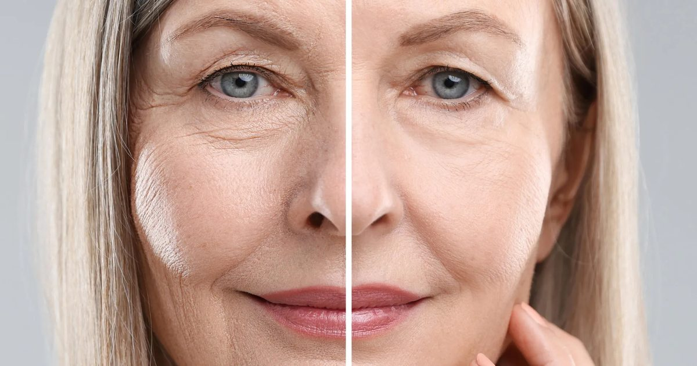

Ученые изменили биологический возраст у пожилых людей всего за 4 недели
Пожилые люди, которые изменили баланс жиров, углеводов и животного белка в своем рационе, показали признаки снижения биологического возраста всего через четыре недели.
Самый сильный результат наблюдался у участников, которые придерживались всеядной диеты с низким содержанием жиров и углеводов.